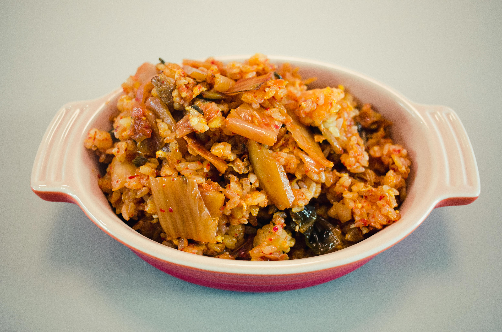

Note: Not an accurate depiction of this recipe. It was all I could find online.
This recipe basically comes from the left over cabbage, meat and rice that are used in making "Kohlrouladen" or "Cabbage rolls". You could see it as a deconstructed/lazy/not-wanting-to-stand-in-the-kitchen-for-hours version, and it is really really tastey! I kinda prefer it to actual cabbage rolls, but only slightly. (maybe)
Ingredients
2 Cups of rice
250g ground meat
1/2 a head of cabbage, chopped
1 Onion, diced
2 cloves of garlic
3 tbsp of tomato paste
250ml stock
Spice mix:
2 pinches of salt
1 heaping tsp Paprika
1/2 tsp Piment (allspice)
1/3 tsp cumin
Steps
Cook the meat with spice mix till brown.
Add both onions and garlic to the pan and cook till onions are translucent
Add the chopped cabbage, it might seem like a lot but it will cook down slightly.
Add tomato paste and stock and cook till the cabbage is tender.
Make 2 cups of rice in a rice cooker or however you cook your rice, after it is done, add all of it into the same pan with the cabbage and stir. Done!